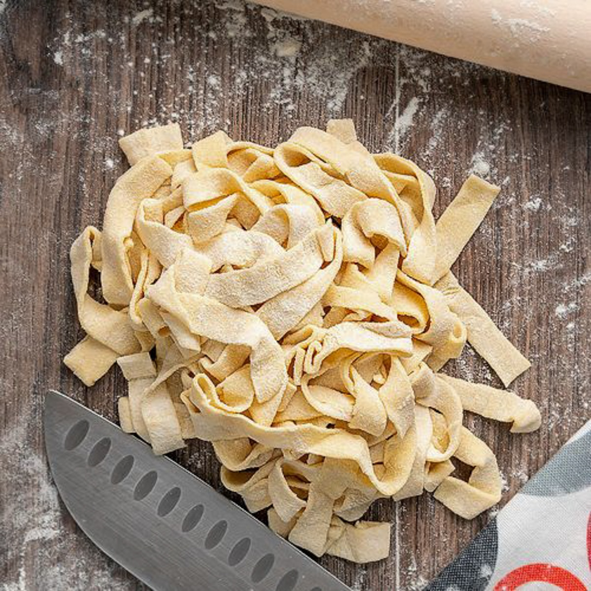

Homemade pasta

Description
This is recipe for a delicious homemade pasta, that you can enjoy with with tomato sauce, cheese sauce, or anything else that you like!
Ingredients
- Flour
- Eggs - about 2 per cup of flour
- Salt
- Olive oil
Steps
- Pour flour on your working surface and use your fingers to create a pool in the middle.
Into the space you created, crack eggs and add a bit of salt and olive oil.
- Use fork to beat the eggs and while doing so, grab a bit of flour with every movement of the fork to mix into the eggs.
- After a while, you should have mixture that you can start working on with your hands (you will get your hands quite dirty during this) and slowly start kneading the dough. For kneading, my prefered technique is using my palm to push and after use fingers to roll the dough back under my palm, but use any technique that you like.
- After intenstive kneading for at least 10 minutes (dough should spring back a bit when pushed into with finger), wrap the dough in plastic wrap and let it rest aside for about 30 minutes.
- After resting, it is time to roll the dough! First of all, flour everything - primarily rolling pin, dough and working surface. Next you want to laminate your dough by rolling it a little bit, fold it onto intself and rotate it by 90 degrees. Do that at about 3 times.
- Once you are done with laminating, its time to roll it into thickness of preference, but at least you should be able to see your fingers through the dough if you check it against window / source of light.
- Now, all you need to do is cut your pasta into prefered shape and you are done! Give yourself a pat on the back, you made pasta by your own hands!
- To cook it, get some water boiling, generously salt it and put your pasta in. IMPORTANT: Remember, that homemade pasta is done in 2 or 3 minutes, definitely do not leave it cooking for 10 or more minutes like store bought pasta. After your pasta is cooked to your preference (test by tasting it), either remove it from the boiling water or strain it and enjoy! One more tip to remember: Water you cooked your pasta in can be used to thicken sauces, as it contains a lot of starch. It is good thing to remember when cooking some sort of sauce alongside. Enjoy!